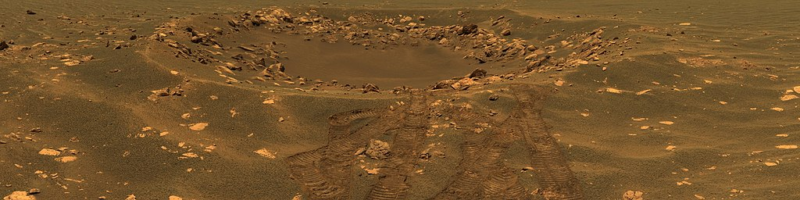

Oportunity

О мисии
Об оппарате
«Оппортью́нити» (англ. Opportunity, МФА: [ˌɑː.pɚˈtuː.nə.ti] — «благоприятная возможность»), или MER-B (сокр. от Mars Exploration Rover — B') — второй марсоход космического агентства НАСА из двух, запущенных США в рамках проекта Mars Exploration Rover. Был выведен с помощью ракеты-носителя Дельта-2 7 июля 2003 года[7]. Он достиг поверхности Марса 25 января 2004 года, тремя неделями позже первого марсохода «Спирит», успешно доставленного в другой район Марса, смещённый по долготе примерно на 180 градусов[8]. «Оппортьюнити» совершил посадку в кратере Игл, на плато Меридиана. Название марсоходу, в рамках традиционного конкурса НАСА, было дано 9-летней девочкой российского происхождения Софи Коллиз, родившейся в России и удочерённой американской семьёй из Аризоны[9]. На начало 2018 года «Оппортьюнити» продолжал эффективно функционировать, уже в 55 раз превысив запланированный срок в 90 солов[10][11], проехав к январю 2018 года 45 км[12][13][14], всё это время получая энергию только от солнечных батарей. Очистка солнечных панелей от пыли происходит за счёт естественного ветра Марса. В конце апреля 2010 года продолжительность миссии достигла 2246 солов, что сделало её самой длительной среди аппаратов, работавших на поверхности «красной планеты» (предыдущий рекорд принадлежал автоматической марсианской станции «Викинг-1», проработавшей с 1976 по 1982 год). 12 июня 2018 года марсоход перешёл в спящий режим из-за длительной и мощной пылевой бури, препятствующей поступлению света на солнечные батареи, с тех пор на связь не выходил. 13 февраля 2019 года NASA официально объявило о завершении миссии марсохода[15].
Кратер Эндьюранс 20 апреля 2004 года (95-й сол) «Оппортьюнити» достиг кратера Эндьюранс, в котором видны несколько слоёв горных пород[40]. В мае марсоход объехал кратер, выполнив наблюдения с помощью инструмента Mini-TES, а также передав панорамные снимки кратера. Скала «Камень Льва» была изучена марсоходом на 107-й сол[41], её состав оказался близок к слоям, найденным в кратере Игл. 4 июня 2004 года члены миссии заявили о своём намерении спустить «Оппортьюнити» в кратер Эндьюранс, даже если не будет возможности из него выбраться. Целью спуска было изучение слоёв горных пород, видимые на панорамных снимках кратера. «Это — решающее и очень важное решение для миссии Mars Exploration Rovers», — сказал доктор Эдвард Вейлер, помощник администратора НАСА по космическим исследованиям[42]. Спуск «Оппортьюнити» в кратер начался 8 июня (133-й сол)[43]. Было установлено, что степень наклона боковых стенок кратера не является непреодолимым препятствием, более того, у ровера оставался запас в 18 градусов. 12, 13 и 15 июня 2004 года (134-й, 135-й и 137-й сол) ровер продолжал спускаться в кратер. Хотя некоторые из колёс проскальзывали, было установлено, что проскальзывание колёс возможно даже при угле наклона в 30 градусов. Во время спуска были замечены тонкие облака, похожие на земные. «Оппортьюнити» провёл примерно 180 солов внутри кратера, прежде чем выбрался из него в середине декабря 2004 года (315-й сол)[44].